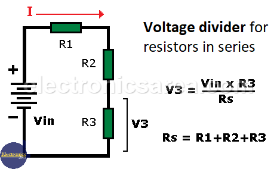

Voltage Divider
Fundamentals
A voltage divider is a passive linear circuit (series) that outputs a fraciton of the total voltage (voltage from source).
A voltage divider referenced to ground is created by connecting two electrical impedances in series.
https://en.wikipedia.org/wiki/Voltage_divider (information source, Wikipedia)
Uses
Resistor Voltage dividers are commonly used to create reference voltages, or to reduce the voltage. Anotehr use is to be used as signal attenuators at low alternating current frequencies.
Formulas Rearrangements
The formula can be rearranged to find the voltage or the resistance. The rearrangements are as follows:
- Vout = Vsource * (Rx / RTotal)
- Vsource = Vout * (RTotal / Rx)
- Rx = (Vout * RTotal) / Vsource
- RTotal = (Vsource * Rx) / Vout
- https://electronicsarea.com/voltage-divider/ (image source)

Calculator
This is a calculator that can be used to calculate the Vout, Vsource, Rx, and RTotal in a circuit. It is based on the voltage divider formula and can be used to find the unknown value when the other values are known. These are the instructions on how to use the calculator:
- Use numbers only, do not enter any letters or special characters (this inclused SI prefixes).
- For your unknown value, enter 0.
- Click the "Start" button to begin.
- Click on the buttons (voltage, current or resistance) to assign each a value.
- Then click on the "Calculate" button and the result will be calculated and displayed.
- To reset the calculator, click the "Reset" button.